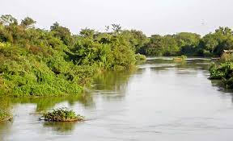

Forêt Classée de Toumousseni
Description
La Forêt Classée de Toumousseni est une réserve naturelle située à environ 40 km au sud-ouest de Banfora. Cette forêt dense et luxuriante abrite une biodiversité exceptionnelle, avec de nombreuses espèces d'arbres, d'animaux et d'oiseaux. Le site offre des sentiers de randonnée bien tracés et des points d'observation pour admirer la faune et la flore locale.
Les visiteurs peuvent explorer les différents sentiers, observer la vie sauvage et apprendre sur l'écosystème tropical. Le site est particulièrement impressionnant pendant la saison des pluies, lorsque la végétation est au sommet de sa splendeur.
Importance Naturelle et Culturelle
La Forêt Classée de Toumousseni est un site naturel majeur de la région des Cascades du Burkina Faso. Elle joue un rôle crucial dans la préservation de la biodiversité locale et dans la régulation du climat. Le site est également un lieu sacré pour les communautés locales, qui y pratiquent des rituels traditionnels et des cérémonies liées à la nature.
Depuis les années 2000, le site est devenu une destination écologique importante, attirant des visiteurs du monde entier intéressés par la nature et la biodiversité. Des efforts de préservation sont en cours pour protéger ce patrimoine naturel unique et maintenir l'équilibre entre le tourisme et la protection de l'environnement.
Informations Pratiques pour la Visite
- Localisation : Près de la localité de Toumousseni, non loin de Banfora.
- Activités : Randonnée pédestre, observation des oiseaux, découverte de la flore, pique-nique (dans les zones autorisées).
- Meilleure période pour visiter : Après la saison des pluies (octobre à décembre) lorsque la végétation est luxuriante, ou pendant la saison sèche pour une marche plus aisée.
- Équipement conseillé : Chaussures de marche confortables, vêtements longs et légers pour se protéger des insectes, anti-moustique, jumelles, eau.
- Conseils : Il est préférable de visiter la forêt avec un guide forestier ou un guide local qui connaît bien les sentiers et peut identifier les espèces végétales et animales. Respectez les consignes de protection de la nature (ne pas laisser de déchets, ne pas cueillir de plantes sans autorisation).
{kind=link}
{kind=link}
{kind=link}